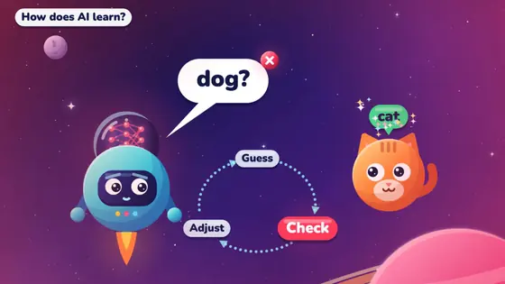
Video Studio
Futurepedia reference
Style Atlas
How does AI learn? 86 Futurepedia styles and a Video Studio comedy explainer. Play the original previews when the video files are available.
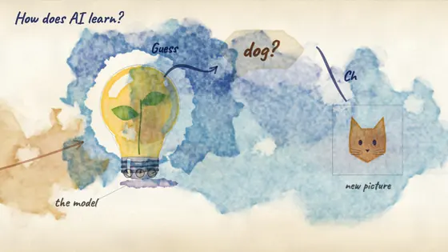
Watercolor Wash
Original prompt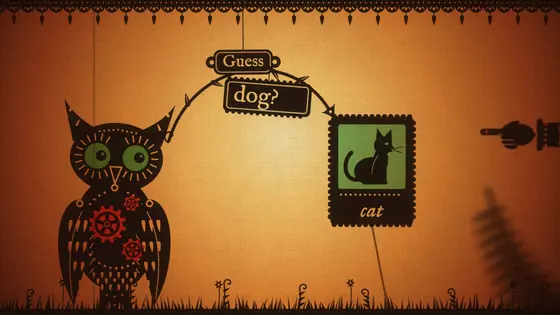
Shadow Puppet Theatre
Original prompt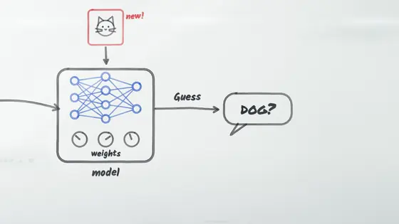
Whiteboard Explainer
Original prompt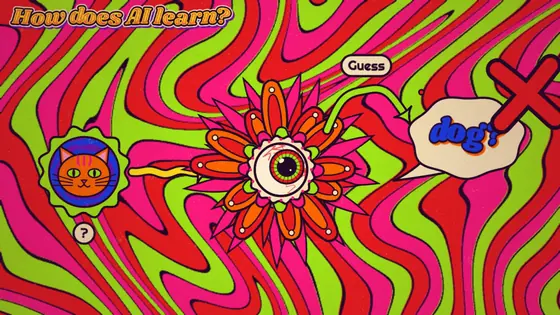
Psychedelic Poster
Original prompt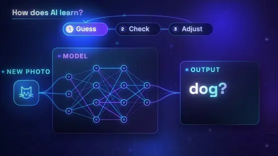
Tech Glow Explainer
Original prompt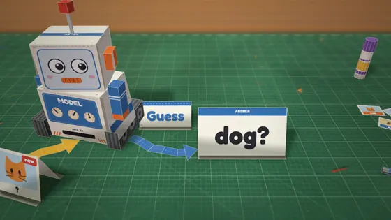
Papercraft Models
Original prompt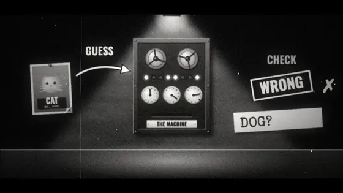
1940s Film Noir
Original prompt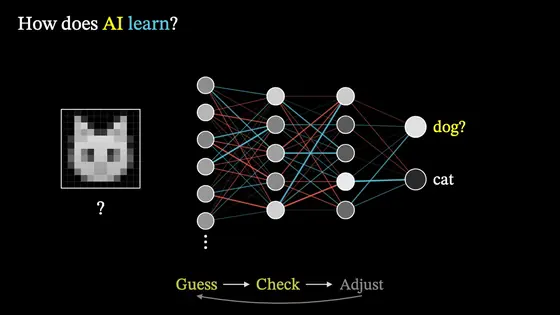
Manim-Style Math
Original prompt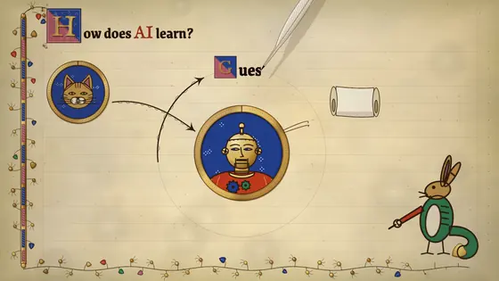
Illuminated Manuscript
Original prompt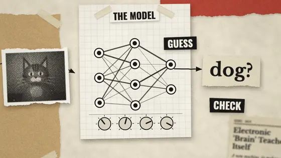
Editorial Essay Collage
Original prompt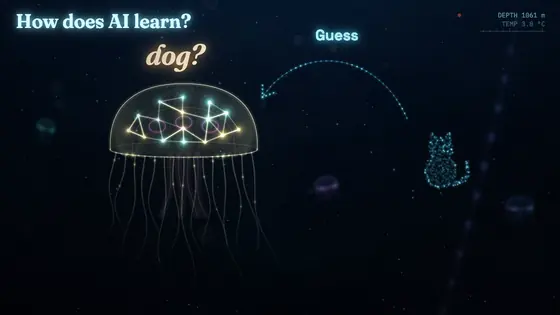
Bioluminescent Deep Sea
Original prompt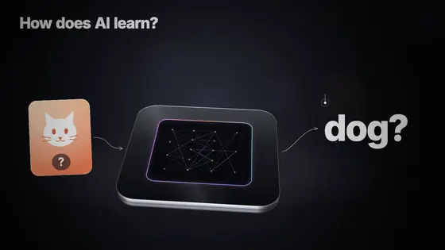
Product Launch Reveal
Original prompt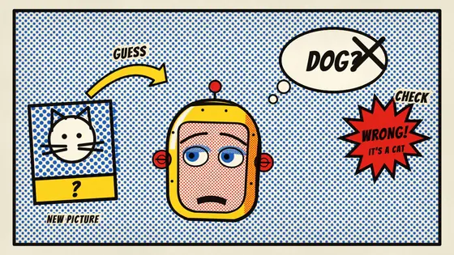
Halftone Pop Panel
Original prompt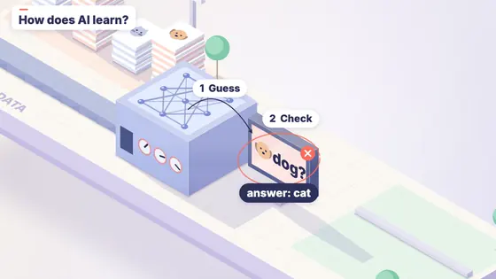
Isometric Pastel
Original prompt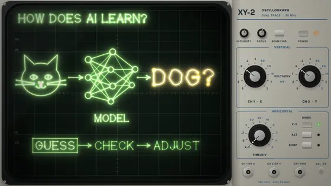
Oscilloscope Vector Art
Original prompt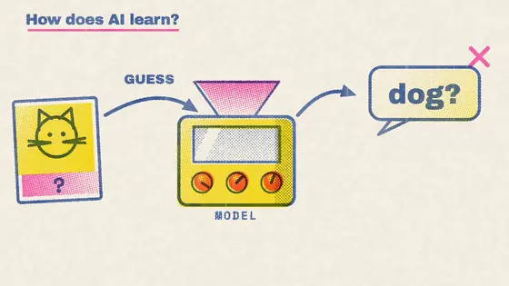
Risograph Zine
Original prompt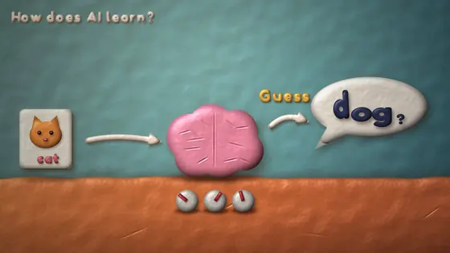
Claymation Set
Original prompt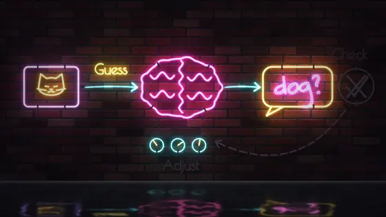
Neon Sign at Night
Original prompt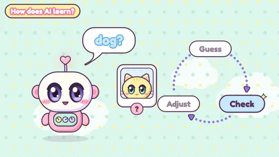
Kawaii Anime
Original prompt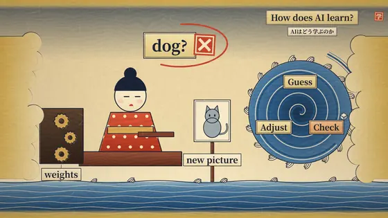
Ukiyo-e Woodblock
Original prompt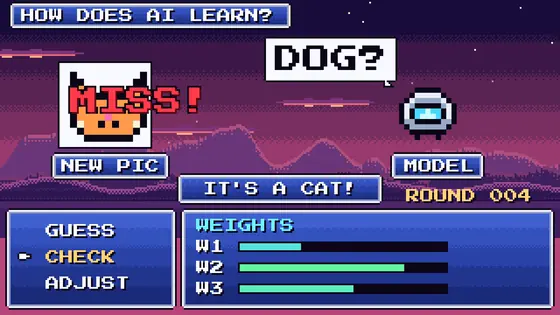
16-Bit Pixel Odyssey
Original prompt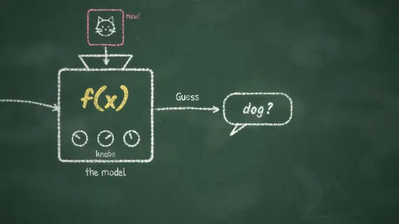
Chalkboard Lesson
Original prompt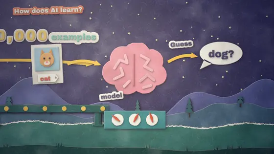
Cut-Paper Diorama
Original prompt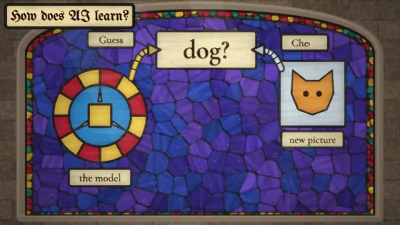
Cathedral Glass
Original prompt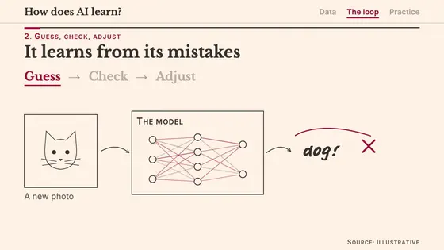
Editorial Chart
Original prompt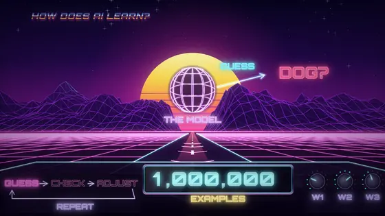
Synthwave Outrun
Original prompt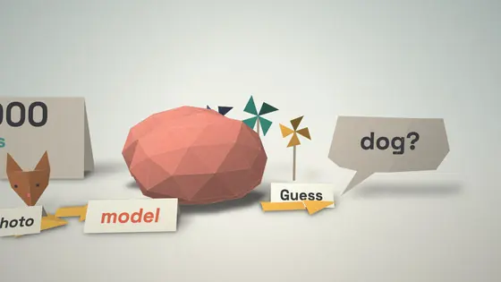
Origami Studio
Original prompt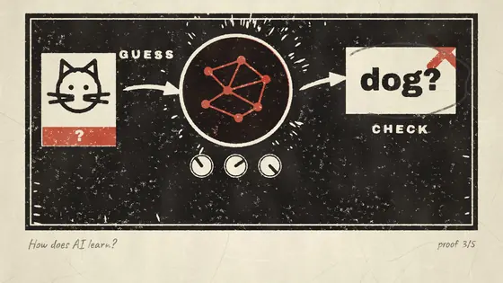
Linocut Relief Print
Original prompt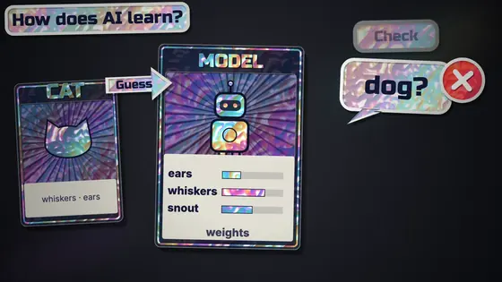
Holographic Foil Card
Original prompt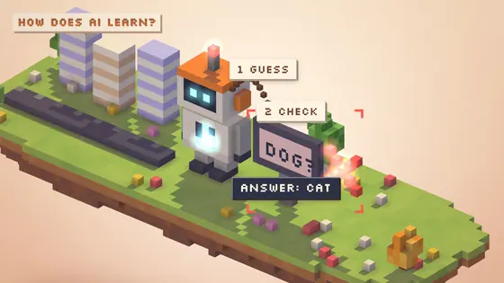
Voxel Diorama
Original prompt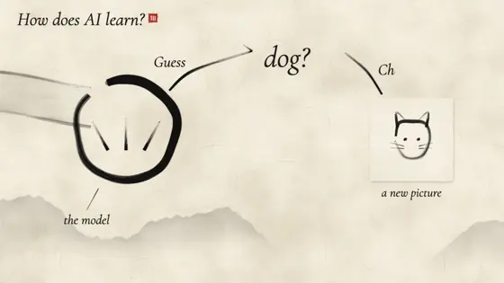
Sumi-e Ink Wash
Original prompt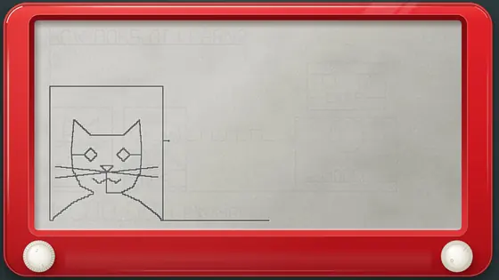
Etch A Sketch Toy
Original prompt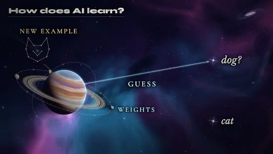
Cosmic Star Chart
Original prompt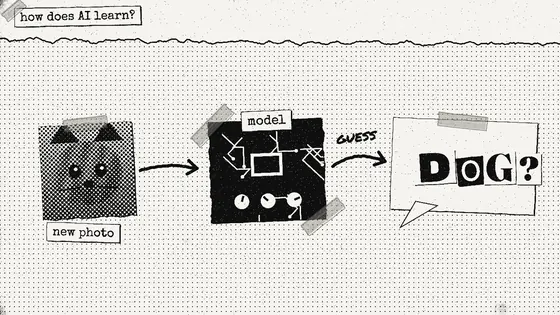
Punk Zine Collage
Original prompt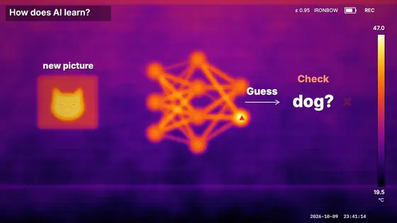
Thermal Camera
Original prompt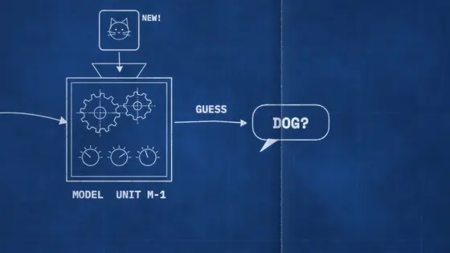
Engineering Blueprint
Original prompt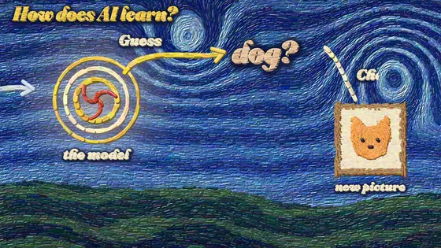
Impasto Night
Original prompt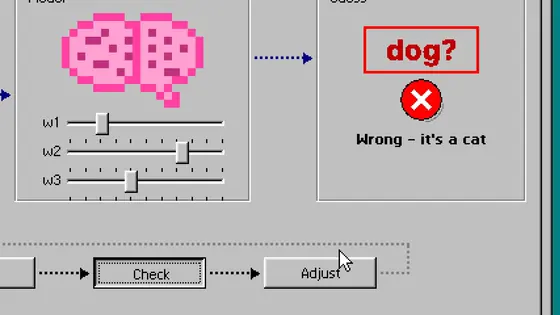
Win95 Desktop
Original prompt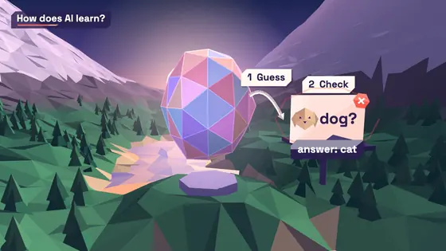
Low-Poly Faceted
Original prompt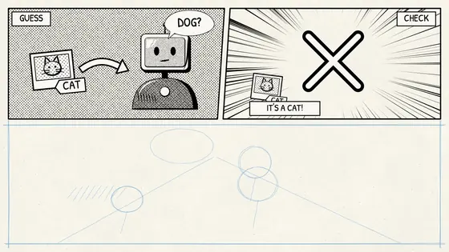
Manga Page
Original prompt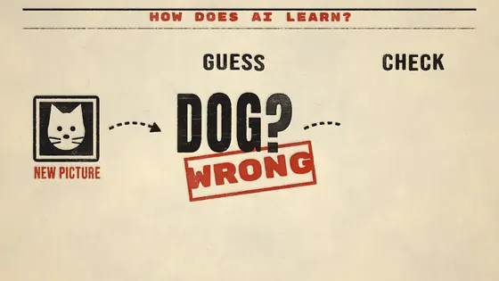
Wood Type Letterpress
Original prompt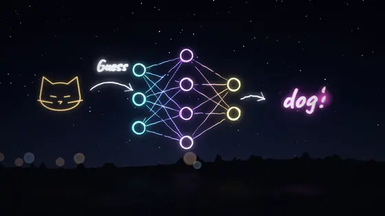
Light Painting
Original prompt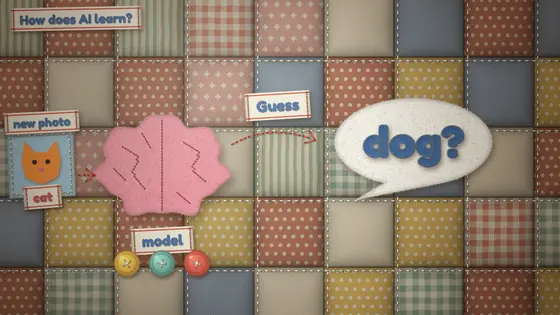
Felt & Patchwork
Original prompt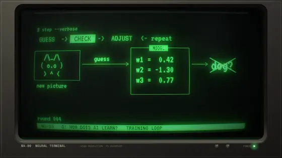
Phosphor Terminal
Original prompt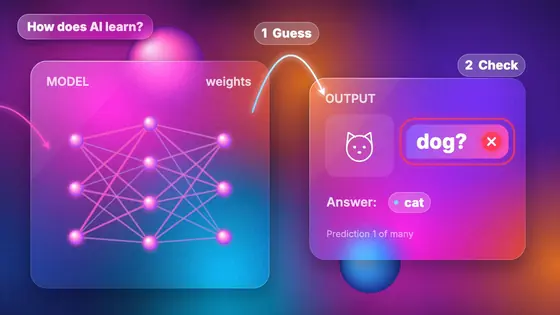
Glassmorphism UI
Original prompt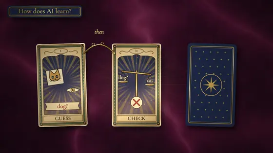
Tarot Card
Original prompt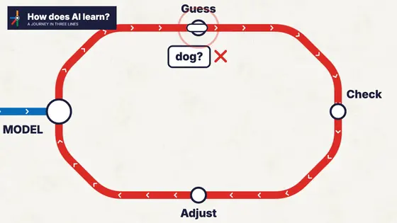
Transit Map
Original prompt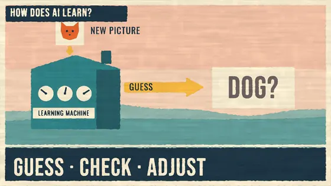
Gouache Travel Poster
Original prompt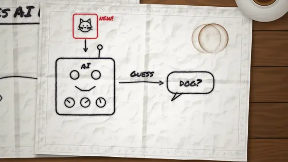
Napkin Sketch
Original promptArt Deco Foil
Original promptRadiograph on Lightbox
Original promptVaporwave
Original promptEbru Paper Marbling
Original promptISOTYPE Pictograms
Original promptSoft 3D Clay
Original promptCross-Stitch Sampler
Original promptConstructivist Propaganda
Original promptPocket Monochrome
Original promptBotanical Plate
Original promptKinetic Type
Original promptByzantine Mosaic
Original promptY2K Liquid Chrome
Original promptSticky-Note Wall
Original promptVintage Newsprint
Original promptHidden-Line Wireframe
Original promptMemphis Group
Original promptBallpoint Notebook
Original promptOp Art Sphere
Original promptTopographic Survey
Original promptPointillist Afternoon
Original promptVector Arcade 1980
Original promptPatent Drawing
Original promptBauhaus Poster
Original promptBitmap Paint Doodle
Original promptNail & Thread String Art
Original promptRidgeline
Original promptSketchbook Graphite
Original promptTeletext Page
Original promptSilkscreen Grid
Original promptGuilloché Security Print
Original promptASCII Demoscene
Original promptInternational Typographic Style
Original promptFlow Field
Original promptMacPaint 1984
Original promptMulti-scale Truchet
Original promptEgyptian Comedy Explainer
Template guideNo templates match your search.